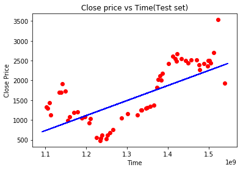
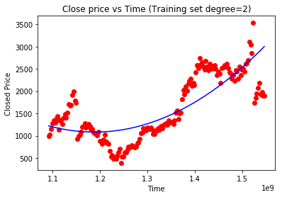
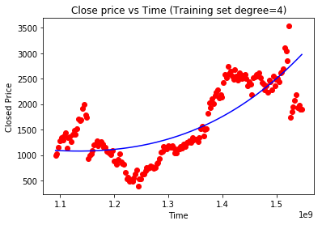
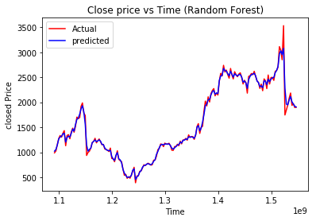
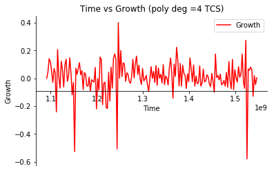
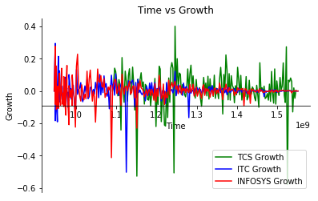
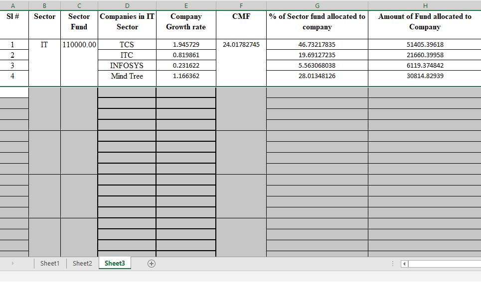

Analysis of share market for mutual fund allocation & deriving relationship among different sector
Created by Achyut Ghsoh and Soumik Bose
Steps for calculation
- Abstract
- Dimensions of Analysis
- Sample Dataset
- Different Regression Models
- Random Forest Regression
- Growth Rate Calculation
- Graphical Analysis
- Allocation of Funds
- Spreadsheet Example
- Source
Abstract
- Share market prediction is always an interesting research topic as it deals with a lot of uncertainties and unpredictability
- This paper analyses the correlation between two different sectoral indices (e.g. between Automobile sector index and between Metal sector index, between Bank sector index and IT sectoral index etc.) in a time lagged manner.
Dimensions of Analysis
Time: Time is almost an inevitable dimension in data warehouse formation. For the share market Time could be represented in many formats: Hour, Day, Week, Month, Quarter, Year etc. as required for the analysis.
Dimensions of Analysis
Closing Price: “Closing price” generally refers to the last price at which a stock trades during a regular trading session. For Indian share market regular trading sessions run from 9:00 a.m. to 3:00 p.m.(GMT).
Dimensions of Analysis
Company Group: This could be represented in different ways, however, they are generally grouped to represent a specific industry (such as Banking, IT, Auto etc.) or based on market capitalization (such as Large Cap, Mid Cap, mall Cap).
Sample Dataset

This is the scatter plot of sample dataset of TCS.
Different Regression Models
This is Linear Regression (TCS Month based)
Different Regression Models
This is Polynomial Regression of degree 2 (TCS Month based)
Different Regression Models
This is Polynomial Regression of degree 4 (TCS Month based)
Random Forest Regression Model
This is Randomforest Regression (TCS Month based)
Random Forest Regression Psudo Code
#Converting date into equivalent timeframe
timestamp=[]
import datetime
import time
for d in x:
t=datetime.datetime.strptime(d[0],'%Y/%m/%d').date()
ti=time.mktime(datetime.datetime
.strptime(d[0], '%Y/%m/%d')
.timetuple())
timestamp.append([ti])
#Fitting random forest regression for training set
from sklearn.ensemble import RandomForestRegressor
regressor =
RandomForestRegressor(n_estimators = 80, random_state=0)
regressor.fit(x_train,y_train)
#Predicting the test set result
y_pred=regressor.predict(x_test)Growth Rate Calculation
- Pick up a company from a particular sector.
- Find the percentages of the growth rate of the company for a different time period with respect to the month immediate earlier.
Steps for calculation
- Derivation=Actual price-predicted best fit price
- Weight=1/(P *(p+1)/2), where P=Total Observation
- Growth=(Actual price of 2nd observation- Actual price of 1st observation)/ Actual price of 1st observation
- CNGR(Company net growth rate)= Growth * Weight
- CNGRj = Y1 ∗ Gr1 + Y2 ∗ Gr2 + · · · + Yi ∗ Gri + · · · + Yp ∗ Grp,
where CNGRj is the Company Net Growth Rate of jth company (where j=1 to m)
Growth Calculation Psudo Code
#Deviation
DeviationT=[]
for i in range(0,174):
Dev= Yt[i]-Y_pred_TCS[i]
DeviationT.append(Dev)
P_T=len(Yt)
#compute Yi
#formula 1
m_Yi_T=[]
Q=P_T
#Weight Calculation
Wt_T=1/(P_T * (P_T+1)/2)
i=0
while (i<244):
Yi=Wt_T*Q
m_Yi_T.append(Yi)
i=i+1
#compute Yi
#formula 2
for i in range(0,174):
Yi= Wt_T*Q
m_Yi_T.append(Yi)
Q=Q-1
######Step 3########
Gr_T=[]
G=0.0
#for first growth is 0
Gr_T.append(G)
#Compute Growth(Gr)
for i in range(1,174):
G=(Yt[i]-Yt[i-1])/Yt[i-1] * 100
Gr_T.append(G)
#Company net growth Rate
#CNGR
CNGR_T=[]
for i in range(0,174):
CN=Gr_T[i]*m_Yi_T[i]
CNGR_T.append(CN)
Graphical Analysis
 We have considered 3 IT Companies and Stock price started from January 2000 to Jan 2019
Allocation of Fund
- Our motive is to allocate more funds in such sectors and companies having better growth rate over the sectors.
- Find out the Sector Multiplying Factor (SMF): SMF = 100/(Gr1 + Gr2 +…… Grn ), Where Gi is the growth rate of a sector containing n number of companies.
Allocation of Fund
- Determine the company wise fund to be invested by the mathematical Formula given below.
CAk = gk × CMF for sector Ci, (where k = 1 to m ). Here CAk denotes company wise allocation percentage wise. - Thus company wise allocation is given by
SCAk = SFAi × CAk
Spreadsheet Example
Source
- Data mining algorithm to analyse stock market by Cicil Fonseka & Liwan H. Liyanage
- Share Market Sectoral Indices Movement Forecast by Giridhar Maji , Soumya Sen & Amitrajit Sarkar